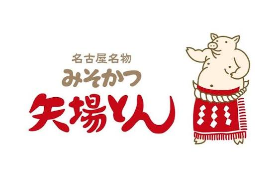
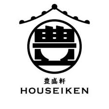
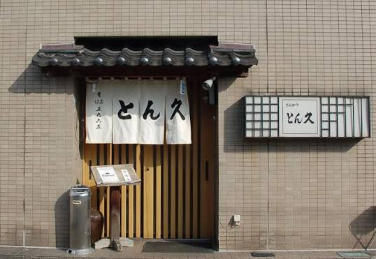
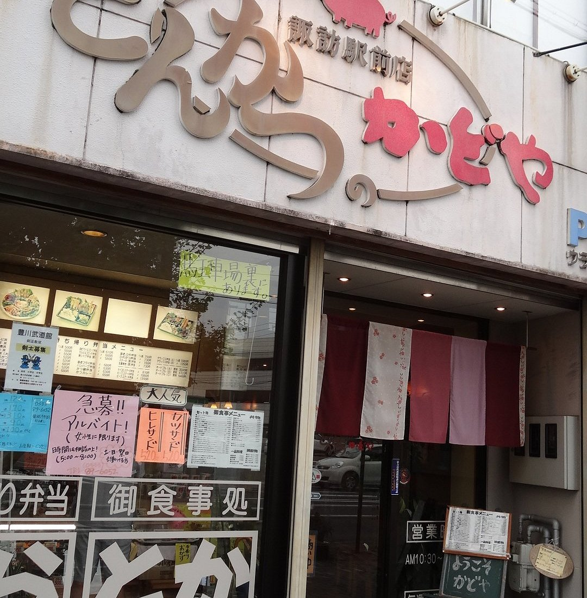
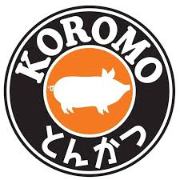

愛知県のご当地グルメ紹介
味噌カツとは
名古屋を中心に発展した料理で、豚カツに八丁味噌をベースにした甘辛い味噌だれをかけたもの。ご当地グルメとして有名で、地元の人々に愛されている。濃い味から生み出されるキャベツや米との相性は抜群。
味噌カツを食べれるお店
矢場とん 
名古屋の味噌カツ
の代表格の店。
八丁味噌をベース
にした濃厚な
味噌だれが特徴
豊盛軒 
こだわった
国産の豚肉を
使用しており、
衣はサクサク
肉はジューシーな
カツを作り上げ
ている
とんかつ 
とん久
コシヒカリを
かまどで炊き上げた
最高の米との
究極のマッチをみせる
黒豚使用の
とんかつが魅力
かどや 
精肉店直営
ならではの安価
から繰り出される
ジューシーな
とんかつ、そして
ご飯のおかわり自由
で腹いっぱいに
食べたい人へ
おすすめの店
とんかつ 
KOROMO
チーズやトマト
など肉以外も
入ったとんかつ
を食べれる
王道とんかつ屋とは
一風変わった雰囲気
を楽しめるお店